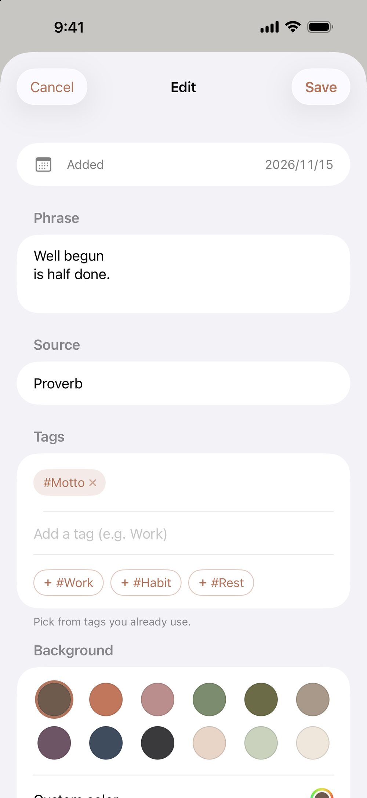

So bringst du eigene Worte oder ein Lieblingszitat auf den Home-Bildschirm deines iPhone
Ein Motto, eine Zeile aus einem Buch oder Film, ein Versprechen an dich selbst. In einer Notizen-App geht es unter. Auf einem Widget siehst du es jedes Mal, wenn du dein iPhone in die Hand nimmst.
So geht es mit Kotoba, einem Text-Widget für eigene Worte. Zwanzig Sprüche und ein Spruch auf deinen Widgets sind kostenlos.
1. Deine Worte sichern
Öffne Kotoba und tippe auf + unten rechts.
Schreib deine Worte unter Spruch.
Optional: Quelle (ein Buch, ein Film, ein Freund), Tags und Hintergrund als Farbe für das Widget.
Tippe auf Sichern.
Beim ersten Öffnen von Kotoba sind ein paar Beispielsprüche da. Du kannst sie behalten oder entfernen.

2. Das Widget auf den Home-Bildschirm legen
Halte eine freie Stelle auf dem Home-Bildschirm gedrückt.
Tippe auf Bearbeiten (oder +) in der oberen Ecke und suche nach „Kotoba“.
Wähle Klein, Mittel oder Groß und tippe auf Widget hinzufügen.
3. Die angezeigten Worte wählen
Halte das Widget gedrückt, tippe auf Widget bearbeiten, dann wähle deine Worte unter Spruch. Wählst du nichts, zeigt es den ersten Spruch deiner Liste. Tippe auf das Widget, um diesen Spruch in der App zu öffnen.
Auf dem Sperrbildschirm
Halte den Sperrbildschirm gedrückt, tippe auf Anpassen, wähle den Sperrbildschirm, tippe auf den Widget-Bereich und füge Kotoba hinzu. Es gibt drei Stile für den Sperrbildschirm. Den Spruch wählst du genauso, mit „Widget bearbeiten“.
Mehr gewünscht?
Kotoba Pro ist ein Einmalkauf, kein Abo:
So viele Sprüche, wie du willst
So viele Widgets, wie du willst, jedes mit anderen Worten
Jeden Tag, jede Woche oder jede Stunde ein neuer Spruch aus deinen eigenen Sprüchen (auf Wunsch nach Tag eingegrenzt)
Schrift, Textgröße und Ausrichtung für jedes Widget
Backup importieren und iCloud-Sync, für ein neues oder zweites Gerät
Fragen
Brauche ich einen Account oder ein Abo?Nein. Deine Sprüche bleiben auf deinem iPhone. Zwanzig Sprüche und ein Spruch auf deinen Widgets sind kostenlos. Kotoba Pro ist ein Einmalkauf, kein Abo.
Mein Widget zeigt „Mit Pro anzeigen“.In der kostenlosen Version zeigen deine Widgets einen Spruch. Für andere Worte öffne in Kotoba das Menü (…) und tippe auf „Spruch im Widget wechseln“. Halte dann das Widget gedrückt, tippe auf „Widget bearbeiten“ und wähle den neuen Spruch. Widgets mit verschiedenen Sprüchen gleichzeitig gehören zu Pro.
Können die Worte jeden Tag wechseln?Ja, mit Pro: Stelle unter „Widget bearbeiten“ bei „Anzeige“ „Jeden Tag ein neuer“, „Jede Woche ein neuer“ oder „Jede Stunde ein neuer“ ein. Es wählt aus deinen eigenen Sprüchen, und du kannst nach Tag eingrenzen.
Was passiert bei 20 Sprüchen?Nichts, was du gesichert hast, wird gelöscht. Nur neue Sprüche kannst du nicht mehr hinzufügen. Mit Pro fügst du so viele hinzu, wie du willst.